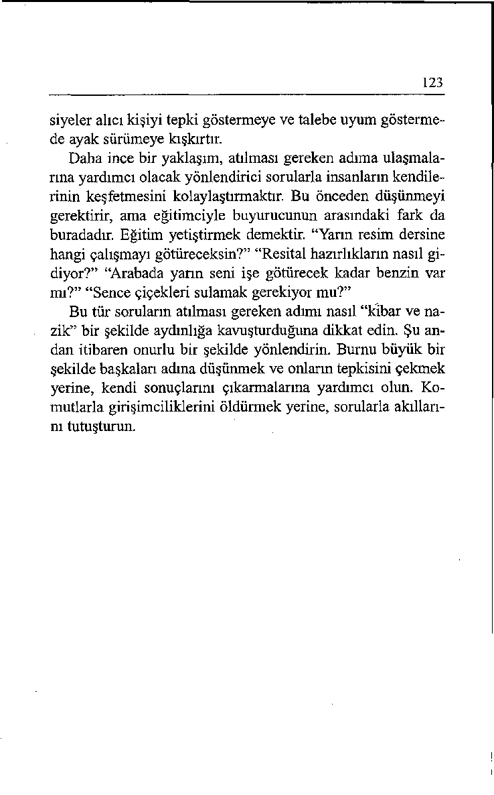

Emir almaktan hoşlanan birisini tanıyor musunuz? Herhalde,
hayır.
Şu cümlelere bir bakın: “Sonra geri arayın!” “Bana hesap
numaranızı verin!” “Bunu George’a sor!” Bu tür emir kiplerini duyduğunuzda içinizden kükremek gelmiyor mu? Bunun niçin böyle olduğunu hiç düşündünüz mü?
Mecbur Olmak mı, İstemek mi?
“Kendi iradesine rağmen ikna olmuş birisi hâlâ aynı görüştedir.”
- ANONİM
Sabah uyandığınız andan gece yatana kadar geçen süre içinde
sadece iki nedenden dolayı herhangi bir şeyi yaparsınız. Bunu
119
bir düşünün. İnsanlar bir şeyi ya mecbur oldukları ya da istedikleri için yaparlar.
Eğer bir şeyi yapmaya mecbursanız (yoksa sonuçlarına katlanmanız gerekecektir) yaparsınız. Yaparsınız ama isteksizce, içerleyerek ve direnerek yaparsınız. İnsan bir şey yapmaya zorlandığında bazen bundan büyük öfke duyar. Hatta acısını
çıkarmak ister. Bir şeyi ancak isteyerek yaptığınızda gönüllü
olarak harekete geçersiniz.
O nedenle talimatları ricalar ya da öneriler şeklinde sunmak büyük önem taşır. Bir emri öneriye dönüştürmek, insanların zihinlerinde bir burgaç gibi işleyen mecburiyet çerçevesinden rahatlatıcı istek çerçevesine geçmesini mümkün kılar.
İnsanlar talimatlarını sorular şeklinde ifade etseler kendinizi ne kadar rahat hissedeceğinizi düşünün. “Kendisi şu anda dışarıda. Sonra geri arar mısınız, yoksa bir mesaj mı bırakmak istersiniz?” “Bana hesap numaranızı verebilir misiniz?” “Bu
projeden George sorumlu. Şu numaradan kendisini ararsanız
size gerekli bilgileri verebilir.”
Özerklik; “kendi kendini yöneten özgürlük” ya da “kendi
kendini yönetme niteliği veya durumu” olarak tanımlanmaktadır. Herkes özerk olmak ister ve hiç kimse bunun elinden alınmasını hoş karşılamaz. Yukarıdaki örneklerdeki soruların size kendi kararınızı verme ve eylem hattmızı seçme fırsatı tanıdı ğım saptayabilirsiniz. Kendinizi sorumlu hissettiğiniz için işbirliği yapmaya çok daha açık olursunuz.
Kontrol mü, Tercih mi?
“Sıradan nezaket nezaket değildir.”
- TONGUE FU DÜŞÜNCESİ
Bir atölye katılımcısı söz alıp şunları söyledi: “Ya eğer seçme
olanakları yoksa ne olacak? Elemanlarıma talimatlara lütfen
uymalarını rica edemem ki! Bu bir tercih değil, emirdir.” Bir
120
başka katılımcı kendi görüşünü ekledi: “Eğer odasını toplamayı kendi tercihine bıraksam, oğlum bunu hiçbir zaman yapmaz.”
Bu kitaptaki diğer tekniklerde de olduğu gibi, bu fikir de
efendiniz değil uşağınız olmalıdır. Kuşkusuz kontrolü ele alıp
insanlara yapmaları gerekeni söylemek zorunda kalacağınız
anlar olacaktır. Ne var ki, bu talimatları çatışmayı en aza indirecek bir şekilde aktarmak herkesin yararına olacaktır. Eğer komutları kibar bir şekilde iletirseniz, insanlar genellikle onlara ayak uydurmayı tercih edecektir.
Ayak uydurmak, eylemlerini bir başkasının isteklerine, bir
kurala ya da zorunluluğa uyarlamak demektir. Eğer bir buyru ğu özenli bir şekilde ifade etmek için çaba gösterirseniz, diğer
insanların otoritenizi kabul etmesi çok daha olasıdır. İşbirliği
yapmaya esinleneceklerdir, çünkü kural kendilerine dayatıl—
mamakta, bir rica olarak sunulmaktadır.
Komuta mı, Nezaket mi?
“Hayat o kadar kısa değildir, nezaket için her zaman zaman bulunabilir."
- RALPH WALDO EMERSON
Aşağıdaki örnekleri inceleyin. Tatsız bir talebi yeniden formüle etmenin hazmını nasıl kolaylaştırdığını göreceksiniz.
121
EMİR
RİCA - ÖNERİ
“Cuma günü eğitim toplantısına
“Çalışma planınızı lütfen Cuma
gelmeniz gerekiyor. Bütün yeni
günkü eğitim toplantısına katıbaşlayanlar için zorunludur.”
lacak şekilde düzenler misiniz?
Yeni başlayan bütün arkadaşlar
hazır bulunacaklar.”
“Bu projede Vem’le birlikte ça “Bu projeyle ilgili olarak lütfen
lışacaksınız.”
Ven’le temasa geçer misiniz?
“Arkadaşlarınla oyuna gitmeden
“Çöpü boşalttıktan sonra arka önce çöpü boşalt.”
daşlarınla oynamaya gidebilirsin.”
“İzin bürosuna gidip şu formu
“İzin bürosu üçüncü kattadır.
onaylatacak ve sonra imza için Orada bu formu onaylatıp bize
bize getireceksiniz.”
geri getirirseniz hemen imzala—
nz.
Bir sekreter kız yazdığı mektupta şefinin atölye çalışmalarımıza katıldığından ve öğrendiklerini içtenlikle uygulamaya başladığından söz ediyordu. Sekreter kız yıllardır bu saldırgan adamla çalıştığını ve onun yüksek sesle yağdırdığı emirlerin
ve ikide bir bağırmasının kendisini tükettiğini anlatıyordu.
Her sabah önüne uzun bir yapılacak işler listesi koyuyor ve
gün boyu talimat üstüne talimat yağdırıyormuş. “Bana Manuel’in telefon numarasını bul.” “Angie, toplantı gündemi on dakika sonra önümde olmalı.” “Bana o taslakları getir.”
Şöyle yazıyordu: “Programınızın ertesi günü yapılacak işler listesinin başına şöyle yazmıştı: ‘Angie, lütfen...’ Sonra da yapılacak işleri ayrı ayrı paragraflar halinde düzenlemişti.
Odasından bana bağırmak yerine artık dahili hattan arıyor ve
122
‘Manuel’in telefon numarası sende var mı?’ ‘Lütfen, öğleden
sonraki toplantının gündemini hazırlayabilir misin?’ ‘Taslakları getirebilir misin, lütfen?’ diye soruyordu. Birkaç kere de yerinden kalkıp isteğini belirtmek için masama geldi.
“Bu değişim beni hayrete düşürmüştü. Sonunda ne olduğunu sordum. Bana Unutulacak Sözler, Kullanılacak Sözler’i anlattı. Kursunuz kendisini elemanlarıyla ve ailesiyle nasıl ileti şim kurduğunu gözden geçirmeye esinlendirmiş. Yıllar içinde
şefliğe, işitme mesafesindeki herkese bağıra çağıra emirler
yağdırmayı âdet haline getirecek kadar alışmış olduğunu fark
etmiş. Bu diktatörce tarzın kendisini birlikte çalıştığı ve yaşadığı insanlara nasıl yabancılaştırmış olduğunu görmüş. Ama hakkını vermek gerekir ki, yaşlı bir köpeğe yeni numaralar öğretmek için vaktin hiç de geç olmadığına karar vermiş bulunuyor ve başkalarıyla iletişim kurarken daha kibar davranmak için bilinçli çaba gösteriyor, inanınız ki, kendisiyle çalışmak şimdi çok daha zevkli.”
İkaz Etmek mi, Sormak mı?
‘‘Öğretmen olmayı arzu edenlerin gerçek amacı kendi görüşlerini
aktarmak değil, kafaları tutuşturmak olmalıdır.”
- FREDERICK ROBERTSON
ikaz etmek aslında dırdır etmekten başka bir anlama gelmez.
Ebeveynler ve eşler, çoğu zaman çocuklarının ya da birbirlerinin peşine düşüp neyi ne zaman yapmaları gerektiğini “hatırlatma” tuzağına yakalanırlar. “Yarın resim dersine bir çalışma götürmen gerektiğini unutma.” “Resitale hazır olman için piyano çalışman lazım.” “Akşamdan benzin alsan iyi edersin, ibre deponun boşalmak üzere olduğunu gösteriyor.” “Çiçekleri sulasan iyi olur, solmak üzereler.” Bu hatırlatmalar yardımcı olma amacını taşıyor olsa da, paylama etkisi yapar. Bu tür tav 
123
siyeler alıcı kişiyi tepki göstermeye ve talebe uyum göstermede ayak sürümeye kışkırtır.
Daha ince bir yaklaşım, atılması gereken adıma ulaşmalarına yardımcı olacak yönlendirici sorularla insanların kendilerinin keşfetmesini kolaylaştırmaktır. Bu önceden düşünmeyi gerektirir, ama eğitimciyle buyurucunun arasındaki fark da buradadır. Eğitim yetiştirmek demektir. “Yarın resim dersine
hangi çalışmayı götüreceksin?” “Resital hazırlıkların nasıl gidiyor?” “Arabada yarın seni işe götürecek kadar benzin var mı?” “Sence çiçekleri sulamak gerekiyor mu?”
Bu tür soruların atılması gereken adımı nasıl “kibar ve nazik” bir şekilde aydınlığa kavuşturduğuna dikkat edin. Şu andan itibaren onurlu bir şekilde yönlendirin. Burnu büyük bir şekilde başkalan adına düşünmek ve onların tepkisini çekmek yerine, kendi sonuçlarını çıkarmalarına yardımcı olun. Komutlarla girişimciliklerini öldürmek yerine, sorularla akıllarını tutuşturun.
EMİR DEĞİL RİCA ETMEK İÇİN EYLEM PLANI
Üyesi olduğunuz bir grubun destek verdiği yoksullara yemek dağıtan bir mutfağın gönüllü koordinatörlüğüne getirildiğinizi düşünün.
Herkesin yapması gerekenleri bildiğine emin olmanız gerekiyor.
Bu rolü nasıl yerine getirirsiniz?
UNUTMANIZ GEREKEN
KULLANMANIZ
SÖZLER
GEREKEN SÖZLER
Yetkili olmanın emirler yağdır Yönetmenin, insanları ayak uymak ve yapılması gerekenleri
durmayı tercih etmeleri için
dikte etmek anlamına geldiğini
nazikçe esinlendirmek demek
düşünürsünüz.
olduğunu bilirsiniz.
"Bakırı. Burada önümüzdeki
“Bugün gelmiş olduğunuz için
iki saat içinde yapılması gereteşekkür ederim. Gelin saat alken işlerin bir listesi var. Zatıda hazır olabilmemiz için yamanında yetiştirmek için acele pılması gerekenleri saptayaetmeniz gerekiyor."
lım.”
İnsanlara ne yapmaları gerekti Buyrukları rica şeklinde for ğini anlatmaya başlarsınız, onmüle ederek insanların saygı
lar da direnç gösterir.
duymasını sağlarsınız.
“Kathy, sen havuçları soy. Ge-
“Kathy, havuçları soymaya
orge, sen çorbaya başla. Alebaşlayabilir misin? George,
jandra, sen de tabakları hazır çorbayı hazırlamaya başla-
la.”
san..."
Komutlarınızı yapmalısın, et Önerilerde bulunursunuz, böy-
melisin şeklinde formüle ederlece insanlar kendilerini özerk
siniz, insanlar da sizi patron
hisseder ve isteyerek işbirliği
olarak görür.
yaparlar.
‘‘Anthony, yemekleri ısıtabil “Anthony, önce sandviçleri bimek için saat beş buçukta fırıntirebilir misin? B öylece fırınlar ları hazır etmelisin, dörtte de
da zamanında hazır olmaz
sandviçleri yapmaya başlamamı? ”
lısın.”
On Üçüncü Bölüm
“Yapamam Çünkü”
Engelini Kaldırıp Atm
Birisi ricanızı reddederse ne hissedersiniz? Örneğin, “Ücret
çekimi biraz erken alabilir miyim? Hafta sonu Las Vegas’a gideceğim” diye soruyorsunuz ve şefiniz kabaca yanıtlıyor:
“Hayır, alamazsınız çünkü bordro daha henüz onaylanmadı.”
Hayır ve alamazsınız çünkü sözcüklerinin nasıl yüzünüze
kapatılan sözel kapılar gibi olduğunu görüyor musunuz? Bu
sözcükler sizinle öteki kişi arasında bir karşıtlık ilişkisi doğurmaktadır, çünkü istediğinizi vermemektedir.
Size ne yapamayacağınızı söylemek yerine şefiniz ne yapabileceğiniz üzerinde odaklansaydı, kendinizi çok daha iyi hissetmez miydiniz: “Evet, bordro onaylanır onaylanmaz ücret çekinizi alabilirsiniz.” Evet ve onaylanır onaylanmaz sözcükleri kapıyı yüzünüze kapatmak yerine açmaktadır.
Bu andan itibaren, birisi sizden bir şey rica ettiğinde, istenilen şeyi genellikle küçük bir koşula bağlayabileceğinizi ha-
126
tırlaym. Neyin niçin yapılamayacağı üzerinde yoğunlaşmak
yerine, nasıl ve ne zaman yapılabileceğini bulmaya çalışın.
“Hayır, hakemin gelmesini beklediğimiz için oyunu henüz
başlatanlayız” demek yerine, “Hakem gelir gelmez oyunu başlatacağız. Beş dakika içinde gelmezse de ne olursa olsun oyuna başlayacağız” deyin. Birisine, “Bilgisayarımız devre dışı kaldığı için bu malın stokta olup olmadığını size söyleyemiyorum” demek yerine, “Bilgisayarımız tamir olur olmaz bu malın stoklarımızda olup olmadığını size söyleyebileceğim. Şu anda üzerinde çalışıyorlar ve sanıyorum birkaç dakika içinde devreye girecek” diyebilirsiniz.
Yoksun Bırakmak mı, Tasarlamak mı?
“İnsanın kendisine yardım etmeden başkalarına yardım etmesinin
mümkün olmaması bu hayatta alınabilecek en güzel karşılıklardan biridir.”
- RALPH WALDO EMERSON
Yoksun bırakmak birisinin elindeki bir şeyi almak, ona ulaşmasına imkan vermemek demektir. Birisine bir şeyi yapamayacağını söylerseniz, onu bundan yoksun bırakırsınız ve o da buna kaçınılmazlıkla öfke duyar. Tasarlamak elde etmeyi ya da yapmayı planlamak anlamını taşır. Neyin yapılamayacağını açıklamak yerine, nasıl yapılabileceğini gösterin, insanları yabancılaştırmak yerine onlara destek olun. Yardım için içten çabalarınızın size de yararı olacaktır.
Üç çocuğuna kendisi bakan bir baba bu yaklaşımın ailesinde ne kadar etkili olduğunu anlattı. “Çocuklarımla bir türlü anlaşamıyordum. Benden bir şey için izin istediklerinde reddediyordum. Kendimi bütün istekleri geri çeviren kötü bir baba gibi hissediyordum. ‘Hayır, arabayı alamazsın, bana lazım.’ ‘Hayır, arkadaşlarını çağıramazsın, çünkü daha ev işlerini tamamlamadın.’ ‘Hayır, video seyredemezsin, çünkü daha ev ödevle
127
rini bitirmedin.’ ‘Hayır, dondurma yiyemezsin, daha yemek
yemedin.’
“Semineriniz bana bu kadar sert olmamam gerektiğini öğretti. Pazarlığın ilk bölümünü yerine getirdikleri takdirde istediklerini yapabilmeleri için, yapar yapmaz ya da ardından gibi sözcükler kullanabileceğimi gördüm. ‘Elbette, ben alışverişten döner dönmez arabayı alabilirsin.’ ‘Evet, ev işlerini tamamlayınca ardından arkadaşlarını çağırabilirsin.’ ‘Ev ödevini bitirir bitirmez video seyredebilirsin.’ ‘Elbette, yemeğini yedikten sonra dondurma yiyebilirsin.’ ”
İtici Değil Sevimli Sözcükler Kullanın
‘‘Nazik sözlerin söylenmesi çabuk ve kolay olabilir, ama yankıları gerçekten sonsuzdur.”
- TERESA ANA
Peki, ama “Elbette, bitirir bitirmez...” ya da “Evet, hemen ardından...” demenin olanağı yoksa ne olacak? İsteği kabul etmeniz hiçbir şekilde mümkün değilse, ne yapabilirsiniz? Onlara yardımcı olmak için yapabileceğiniz hiçbir şey yoksa?
Gene de bilmeniz gerekiyor ki, “hiçbir şekilde mümkün değil”
ya da “yapacak hiçbir şey yok” gibi cümleler kullanmanız her
iki tarafı da düş kırıklığına uğratacaktır. Siz onlara yardımcı
olamadığınız için kendinizi güçsüz hissedecek, onlar da sizin
içine düştükleri açmaza duyarsız kaldığınızı düşünecektir.
Bundan böyle, “Umarım” ve “dilerim” gibi sözlerle kötü
haberlerin etkisini yumuşatmaya çalışın. “Mümkün değil” ya
da “yapacak bir şey yok” gibi cümleler iticidir. “Umarım” ya
da “dilerim” gibi sözler ise sevimli gelir. İnsanlara istediklerini her zaman veremezsiniz. Ama ilginizi verebilirsiniz, onları düşündüğünüzü ifade edebilirsiniz. Nazik sözcükler kullanmanızın yankısı, Teresa Ana’nın dediği gibi sonsuza kadar sürebilir.
128
“Yazınızı bu ayın bültenine koyamam, çok geç oldu” demek yerine, “Yazınızı bültene koyabilmeyi çok isterdim ve baskıya girmiş bulunuyor. Arzu ederseniz bekletip gelecek ayın bülteninde iyi bir yere koyabiliriz” diyebilirsiniz. “Siparişlerinizi öğlene kadar yetiştirmemiz hiçbir şekilde mümkün değil, mallar daha henüz gelmedi” demek yerine, “Siparişinizi bugün yerine getirmeyi çok isteriz, kamyonlarımız henüz depodan çıkmamış, gelir gelmez sizi telefonla arayacağım” diyebilirsiniz.
Düşünün, bayram tatili için evinize gitmeye çalışıyorsunuz
ve havaalanı kar fırtınası yüzünden kapalı. Havayolu görevlisi
şöyle diyor: “Bakın, bütün uçuşlar iptal edildi. Yapabileceğim
hiçbir şey yok. Bugün uçmanız mümkün görünmüyor.” Veya
şöyle diyor: “Bu havada uçaklann kalkabilmesi hiçbir şekilde
mümkün değil. Hava açılıncaya kadar beklemeniz gerekiyor.”
Bu tür sözler kızgınlığınızı azaltmaz daha da artırır. Görevlinin içinde bulunduğunuz güç duruma tamamen kayıtsız oldu ğunu düşünürsünüz.
Şimdi bir de görevlinin şöyle konuştuğunu düşünün: “Sizi
uçuşa çıkarabilmeyi çok isterdim. Bayramda evde olmayı çok
istediğinizi biliyorum. Yapabileceğim tek şey hava açılır açılmaz anons etmek” ya da “Kar yüzünden uçağınız kalkamadı ğı için çok üzgünüm. Yapabileceğim bir şey var, size yemek
kuponu verebilirim, böylece havanın açılmasını beklerken
kamınızı doyurabilirsiniz.” “İsterdim” ve “yapabileceğim bir
şey var” sözleri kapalı kapıları açarken, “mümkün değil” ve
“yapabileceğim bir şey yok” sözleri çıkmaz sokağa götürür.
Yapacak Bir Şey Yok mu, Yoksa
Yapabileceğim Bir Şey Var mı?
"Karanlığa lanet okumaktansa bir mum yakmak evladır.”
- CHRISTOPHER CEMİYETİNİN SLOGANI
129
Bir anne bir oturumda şunları anlattı: “Kızım geçen gece soluk soluğa eve geldi, çevremde fırıl fırıl dönerek okul piyesinde baş rolün kendisine verildiğini anlattı. Gala gecesinin tarihini verdi ve bir yere not etmemi rica etti. Ajandama baktığımda o akşam bir konferans için kent dışında olacağımı ve oyuna katılmamın mümkün olmadığını gördüm. Kızım bu kötü haberi duyduğunda benden iş programımı değiştirmemi rica etti. Kendisine seyahatimi ertelememin hiçbir şekilde mümkün olmadığını söyledim.
“Daha önce de iş gezilerim yüzünden kızım açısından
önem taşıyan birçok olayda bulunamamıştım ve bu bardağı ta şıran son damla oldu. Beni işime kendisinden daha çok önem
vermekle suçladı. Kendisini bunun doğru olmadığına ikna etmeye çalıştım, ama beni dinlemiyordu bile.
“Şimdi görüyorum ki, kendisi açısından önem taşıyan bir
olay konusunda benim katı ve duyarsız olduğumu düşünmesinin nedeni, yapabileceğim hiçbir şey yok demekte ısrar etmiş
olmam. Bunun yerine, ‘O akşam senin harika oyununu izleyebilmek için ilk sırada oturabiliyor olmayı ne kadar isterdim, bilemezsin’ demiş olsaydım, kayıtsız bir şekilde sıvışıp gitti ğimi düşünmezdi.
“Şimdi yapabileceğim bir şey olduğunu kavradım. Bu ak şam eve döndüğümde kendisine, geziden geri döndükten sonra evde kendimize özel bir gösteri düzenleyebilmemiz için, oyunu videoya çekecek bir arkadaş bulup bulamayacağımızı soracağım, ikimiz birlikte koltuğa otururuz ve bütün oyun boyunca benimle konuşabilir. Böylece benim onun başarısını paylaşmayı ve kutlamayı gerçekten arzu ettiğimi görecektir.
Alaycı Değil, Duyarlı Olun
“Birisiyle derdini paylaşmak bazen ona bir şey vermekten daha
değerlidir, çünkü para insanın benliğinin dışındaki bir şeyken, anlayış armağan etmek onun ruhuyla iletişim kurmak anlamına gelir.”
- W. H. MOUNTFORD
130
Bir park bekçisi şunları anlattı: “Bu fikir bizlerin çok işine yarayacak. Parklarda insanların tek muhatap olduğu kişi biziz, o yüzden bütün şikâyetlere biz hedef oluyoruz. Gezi alanlarının kalabalıklığı, dinlenme yerlerinin pisliği, patika levhalarının
tahrip edilmiş olması, hatta sivrisineklerden biz sorumlu tutuluyoruz.
“İnsanlar kızgınlıklarım niçin bizden çıkarıyorlar, anlamıyorum. Ne sivrisinekleri biz davet ediyoruz, ne de suçluluğun önüne geçebilecek olan biziz. Bizden bekledikleri nedir?
“Ama şimdi görüyorum ki, omuzumuzu silkip ‘Sivrisinekler için yapabileceğimiz hiçbir şey yok. Şimdi yaz zamanı, bunda şaşıracak bir şey yok’ demek yerine, ‘ilerideki bahçıvan kulübesinden biraz böcek kovucu temin edebilirsiniz, sivrisinekleri uzak tutmanıza yardımcı olabilir’ demek çok daha duyarlı olacak. Alaycı bir şekilde, ‘Eğer müdüriyet tatil günü buraya üç yüz kişiyi sıkıştırmanın mümkün olup olmadığım deniyorsa, bizim yapabileceğimiz bir şey yok’ demek yerine, ‘Daha az insan olmasını biz de tercih ederdik. Eğer başka bir
gün yeniden gelebilirseniz çok daha az ziyaretçi olur ve gezintinizi daha rahat yapabilirsiniz’ demek çok daha yapıcı olur.
‘Ne yapalım, tuvaletleri her dakika kontrol edemiyoruz’ deyip
lafı ağızlarına tıkmak yerine, ‘Tuvaletler böyle berbat bir durumda olduğu için özür dilerim’ demek dertlerini paylaşmak anlamına gelecektir.”
Christopher Cemiyetinin sloganını biraz değiştirerek şöyle
diyebiliriz: insanlara neyi yapamayacağınız ya da neyi elde
edemeyeceklerini söylemek karanlığa lanet okumak anlamına
gelir. Neyi yapabileceğiniz ve neye sahip olabilecekleri üzerinde odaklanmak ise sevecenlikle bir mum yakmaktır.
131
“YAPAMAM ÇÜNKÜ” ENGELİNİ
KALDIRIP ATMAK İÇİN EYLEM PLANI
Çok yoğun bir seyahat acentasında görevlisiniz. Masanızın üstü iş
dolu. Bir müşteriniz arıyor ve karmaşık bir gezi programı için en
ehven fiyatları araştırmanızı ve uçuş programını en kısa zamanda
kendisine bildirmenizi istiyor. Önünüzde bekleyen çok fazla iş var
ve gerekli enformasyonu kendisine aynı gün sağlamanızın mümkün
olmadığını biliyorsunuz. Bu haberi müşterinize nasıl verirsiniz?
UNUTMANIZ GEREKEN
KULLANMANIZ
SÖZLER
GEREKEN SÖZLER
Müşterinize neyi yapamayaca Müşterinize ne yapabileceğini ğınızı anlatırsınız, o da isteği
zi söylersiniz, o da isteğine
reddedildiği için kızar.
saygı gösterildiğini düşünür.
“Sizin için bunu şimdi araştı-
“Yarın sabah ilk iş olarak
ramam, çok yüklüyüm. Yarına
programınız için en iyi fiyatları
kadar beklemeniz gerekiyor.”
bulmaya çalışacağım.”
İsteğinin olanaksız olduğunu
Kendisine yardımcı olacağınızı
söyleyerek moralini bozarsıbildirirsiniz, o da kendisini cidnız.
diye alınmış hisseder.
“Size bu enformasyonu şu an “Elimdeki işleri bitirir bitirda temin etmem hiçbir şekilde
mez ilk işim sizin gezinizi planmümkün değil. Sırada biletlerilamak olacak.”
ni bekleyen başka müşterilerim
var."
Kendisine niçin yardım edeme Ne yapabilmek istediğinizi
yeceğinizi açıklarsınız. Sizi itisöylersiniz, o da sizi sevimli
ci bulur.
bulur.
“Her şeyi bırakıp sizin işinizi
“İsteğinizi hemen şimdi karşı öne alamam. Bu doğru olmaz.”
lamak isterdim ve önce elimdeki diğer işleri tamamlamam gerekiyor.”
“Şeyleri oldukları gibi görmeyiz,
kendi olduğumuz gibi görürüz.
- ANAIS NIN
On Dördüncü Bölüm
Problem’sizleşin
Sorun yaratan bir başka sözcüğü daha öğrenmek ister misiniz?
Bu problem ya da sorun sözcüğüdür. Bilimciler ve matematikçiler açısından bu sözcük sadece “araştırılması, üzerinde düşünülmesi ve yanıtlanması gereken bir soru” anlamına gelir ve olumsuz bir çağrışım yapmaz.
Çoğu insan için ise, problem sözcüğü dert anlamına gelir.
Sözlükler problemi, “kafa karışıklığı, sıkıntı ya da rahatsızlık
kaynağı” olarak tanımlamaktadır. Bu kelimeyi günlük konuşmalarda kullandığınızda, diğer kişi, öyle olmasa bile, bir şeylerin yanlış gittiğini düşünecektir. Dinleyicinin kafası karışacak, canı sıkılacak, rahatsız olacak ve işiniz zorlaşacaktır.
Problem Yanlış Bir Şey Var Anlamına Gelir
“Eğer elinizdeki tek alet bir çekiçse, her problemi bir çivi olarak
görmeye başlarsınız.”
- ABRAHAM MASLOW
133
Bu Unutulacak Söz’den ilk bahsettiğimde butik sahibi bir
katılımcı gülmeye başladı. Şunu anlattı: “Geçen ay bir girişimcilik kursuna katılmıştım ve dolaşarak yönetim anlayışı üzerine konuşuyorduk. Konuşmacı, eğer bütün gün masamızın üzerindeki yazı-çizi işlerinin ardına saklanırsak, ön cephedeki elemanlarımızla teması yitireceğimiz için yöneticilik görevimizi yerine getiremeyeceğimizi anlatıyordu.
“Bu benim açımdan da geçerliydi, gerçekten bütün gün bir
kağıt yığını altında gömülü kalıyordum. O yüzden, kendi kendime, birkaç saatte bir odamdan dışarı çıkıp satış bölümüne inmeye ve elemanlarımla görüşmeye söz verdim. Yanlanna gittiğimde onları nasıl selamladığımı tahmin edebiliyor musunuz? ‘Bir problem var mı?’ Bu durumda devamlı yakınmalarla karşılaşmamda şaşılacak bir şey yok. Bundan böyle iletişimi başlatabilmek ve bana sadece eksiklikleri değil, olan biten her şeyi anlatmalarını yüreklendirmek için şöyle diyeceğim: ‘Ne var, ne yok?’ ya da ‘Gününüz nasıl geçiyor?’ ”
Açık mı, Yoksa Baskıcı İletişim mi?
“Güçlü bir etken yerinde bir deyiştir. Böyle son derece yerinde deyişlerle karşılaştığımızda üzerimizde hem fiziki hem de manevi etkileri olur.”
- MARK TWAIN
Ebeveynler için düzenlediğimiz bir seminerde bir adam pişmanlık içinde başını sallayarak şunları anlattı: “Keşke bunu dün gece biliyor olsaydım. Yetişkin oğlumla fazla bir şey konuşmaz olmuştuk. Telefon edip, ‘Baba, seninle konuşabilir miyiz?’ diye sordu. Ne cevap verdim dersiniz? ‘Tabii, oğlum.
Sorun ne?’ Şimdi görüyorum ki, bu yanıttan benim yaşlı babasını ancak bir şey yanlış gittiğinde aradığını düşündüğümü sanmış olsa gerektir.”
Twain’in de gözlediği gibi, sözcüklerin fiziksel olduğu ka
134
dar manevi etkileri de vardır. Problem sözcüğünü aşırı kullanmanız insanların şevkini kırabilir ve sizden uzak durmaya başlamalarına yol açabilir. En iyisi bu kelimeyi idareli olarak ve sağduyulu kullanmaktır.
Hem Kelimelerinizi, Hem de Dış
Görünüşünüzü Değiştirin
"Hayatımız düşüncelerimizin eseridir.”
- MARCUS AURELIUS
Dış görünüşümüz de kelimelerimizin eseridir. Bir perakende
satış uzmanı şunları anlattı: “Bizim mağazada bu fikrin deği şik bir biçimi çok başarılı bir şekilde kullanıldı. Şikâyet Bölümümüzün adını değiştirdik ve Kalite Güvencesi adım taktık.
Bu ad değişikliği bu bölümde çalışan insanların hem moralini
hem de performansını yükseltti. Önceden bütün işleri problem
saptamak ve çözmekle ilgili olduğu için yıpratıcı geliyordu,
şimdi ise işlerini mükemmeliyeti sağlamak olarak görüyorlar.
Aldıkları her yorum hizmet ve ürünlerimizin kalitesini artırmak için bir fırsat oluyor. Çabalarını artık şirketimizin saygınlığına olumlu bir katkı olarak gördükleri için, yaptıkları işten onur duyuyorlar.”
Problem sözcüğünü olumlu cümlelerle ikame ederek herhangi bir görüşmeyi olumlu bir yöne kanalize edebilirsiniz.
Aşağıda bazı örnekler bulacaksınız:
135
ÖNCE
SONRA
“Shirley, sekreterim aradığını
“Merhabe Shirley, hangi konusöyledi. Sorun ne?”
da konuşmak istiyordun?”
“Artık işimize dönelim. Toplan “Toplantıya son vermeden öntıya son vermeden, tartışmamız
ce, dikkate almamız gereken
gereken bir problem kaldı mı?”
başka bir konu var mı?”
“Cuma öğleden sonra erken
“Elbette, Cuma öğleden sonra
çıkmanızda sorun görmüyoerken çıkabilirsiniz. Bunu hak
rum.”
ettiniz.”
“O müşteriye davranışınızla il “Bay Mappano ile ne oldu?”
gili bir problemim var.”
“Sorun değil, sadece görevimi
“Rica ederim, yardımcı olabil—
yaptım.”
dimse ne mutlu” ya da “Benim
için bir zevktir.”
“Senin problemin ne, bilmek is “Çevrendeki insanlara biraz datiyor musun? Sadece kendini
ha özen gösteremez misin?”
düşünüyorsun.”
Kocasıyla birlikte küçük bir çiçekçi dükkanı işleten
Kathryn, bu fikrin kocası üzerinde kalıcı bir etki yarattığını
anlattı: “Problem sözcüğünü sık sık kullanmasının hayatı algılayışını nasıl kararttığının hiç farkında değildi. Harry için her şey bir problemdi.
“Teslimattan dönüp işler nasıl gidiyor diye sorduğumda
hep, ‘Problem üstüne problem çıktı’ derdi. Ya da ‘Niçin herkes kendi problemlerini benim üstüme yıkıyor’ diye söylenirdi. Elemanlarımızdan biri yanma gidip kendisiyle bir şey konuşmak istediğini söylediğinde, hemen ‘Sorun ne?’ diye so-
136
rardı. Konuşmalarımızı her zaman, ‘Tartışmamız gereken başka problem var mı?’ sözüyle bitirirdi. Bir müşteri ısmarladığı buketi aynı gün eline ulaştırıp ulaştıramayacağımızı sorduğunda, ‘Bu benim için bir problem değil’ ya da ‘Bunda problem var’ diye yanıt verirdi. Dün akşam üstü, kızımız erken ayrılmasına izin verdiğimiz için teşekkür ettiğinde, kendisini üstün körü bir ‘Problem değil’ ile uğurladı.”
Kathryn’in anlattığına göre, eşi problem sözcüğünü kullanmayı masum bir alışkanlık haline getirmişti, bunun sonuçtaki zararlı etkisinin bilincinde değildi.
Şöyle devam etti: “Sizin bir kasetinizi satın aldım ve işe giderken yolda dinledik. Problem sözcüğünden söz ettiğiniz bölümde, Harry hiç sesini çıkarmadan dinledi. Sonra bana dönüp, ‘Ben de böyle yapıyorum, değil mi?’ diye sordu. Bundan böyle ‘problemsizleşmeye’ söz verdi ve bunun etkisi çok büyük oldu. ‘Takip edilme kompleksiniz var diye, herkesin sizi yakalamak için sokağa çıktığını mı kabul edeceğiz?’ deyişini duymuşsunuzdur. Harry’nin durumu da böyleydi. Bu ‘problemli’ kelimeyi çok sık kullanması, hayatı bir yük gibi görmesini, kendisine yüklenmek için ortaya çıkmış didişmelere galebe çalmak için verilen aralıksız bir mücadele gibi almasını getiriyordu. Bu karamsar kelimenin ortadan kalkmasıyla daha olumlu bir görünüm kazandı. Değişimi ailemiz kadar müşteriler de fark etti.”
Çektiklerimi Kimse Bilemez
“Tutumumuz dünyamızı renklendiren tebeşirlerdir.”
-ALLEN KLEIN
Klein’in sözlerine katılıyorum ve kullandığımız sözcüklerin
de tutumumuzu renklendiren tebeşirler olduğunu düşünüyorum.
137
PROBLEM’SİZLEŞMEK İÇİN EYLEM PLANI
Her zaman kendi işinizin sahibi olmak istemiştiniz ve sonunda evinizden yürüttüğünüz bir bilgisayar tamir firması kurdunuz. Bazen telefonla teşhis koyabiliyorsunuz, kimi zaman da müşterilerinizi ziyaret etmeniz gerekiyor. Telefon çalıyor ve bir müşteriniz yardım rica ediyor. Nasıl yanıt verirsiniz?
UNUTMANIZ GEREKEN
KULLANMANIZ
SÖZLER
GEREKEN SÖZLER
Müşterinizin aramasını olum Olumlu ve açık bir şekilde kosuz çağrışımları olan sözcükle
nuşursunuz.
yanıtlarsınız.
“Merhaba Paul, sana nasıl
“Bilgisayarınızdaki problem
yardımcı olabilirim? "
ne? "
Problem sözcüğünü kullanma Çözümlere odaklanmasına yarya devam eder ve gerilimini
dımcı olursunuz.
daha da artırırsınız.
"Sanıyorum ne olduğunu anla "Geçen ayki problemin aynısı
dım. İstersen öğleden sonra
gibi görünüyor. Acaba gene ne
uğrayıp bir bakayım.”
oldu?"
Anzayla ilgili konuşmaya de Diplomatik bir şekilde, olumvam ederek durumu daha da
suz bir nitelendirme yapmadan
kötüleştirirsiniz.
enformasyon almaya çalışırsı “Bilgisayarınızda başka ne
nız.
problem var? Yazıcınızdaki
“Ayrıca, bilgisayarın nasıl çaarıza ne oldu? "
lışıyor? Nazik yazıcın seni desteklemeyi sürdürüyor mu?'
'
“Abartı kendini kaybetmiş hakikattir.”
- KAHLIL GIBRAN
a s M B î S î a a B E O T i M i K i M n K B f s s ^ B î ^ î i a i i i ı
On Beşinci Bölüm
Aşırılığa Gitmekten Sakının
Birisi abartılmış kelimeler kullandığında ne hissedersiniz?
“Beni hiç dinlemiyorsun?” “Hep geç kalıyorsun.” “Her şey senin istediğin gibi olsun istiyorsun.”
Aşırı sözler aşırı tepkileri kışkırtır. Gibran’m da belirttiği
gibi, herkes, bütün, her zaman ve hiç kimse gibi kuvvetli kelimeler genellikle hakikate dayalıdır. Hakikat abartıldığında di ğer kişiler kendini kaybeder, ya hep ya hiç nitelendirmelerini
adil bulmayarak şiddetle protesto eder ve hemen istisnalara
işaret etmeye başlarlar.
Somut mu Öznel mi?
“İletişimde kesinlik önemlidir; yanlış ya da eksik anlaşılan bir kelimenin düşüncesiz ani bir eylem kadar çok felakete yol açabildi ği şimdiki pamuk ipliğine bağlı dengeler çağında bu çok daha
önemli hale gelmiştir.”
- JAMES THURBER
139
Tartışmalarınızı öznellikten koruyup nesnel kılabilmek için
gözlemlerinizi somut gerçek yaşam olaylarına dayandırın;
“Kediye yemek vermeyi her zaman unutuyorsun. Açlıktan ölsün mü istiyorsun?” türünden kesin olmayan bir itham öfkeli bir tepki yaratacaktır. İfade iki kere kışkırtıcıdır, çünkü aşırı sözcük aynı şekilde aşırı bir sonuçla bağlantılıdır. Oysa çocu ğunuzun kediye yemek vermemesinden şikâyetçi olmak bir
şeydir, onu kediyi sevmemekle itham etmek başka bir şey. Öfkeli bir itirazla karşılaşacağınız kesindir.
Bunun yerine şöyle diyemez misiniz: “Bu hafta kedi
üçüncü kezdir yemeksiz kalıyor. Ne oluyor?” Açıklama talebiyle bağlanmış bu somut gözlem, konuşmayı kişiden çok olay üzerinde yoğunlaştıracaktır. Çocuğunuzu bir kavga havasına sokmak yerine, ona bir açıklama getirme ve tutumunu düzeltme fırsatı verin.
Atölye çalışmalarından birinde tam bu noktaya geldiğimizde, bir bayanın yüzünün kızardığını görerek kendisine ne dü şündüğünü sordum. Şöyle dedi: “Çocuklarımın niçin sözümü
dinlemediğini şimdi anladım. Sanıyorum her şeyi abartarak
kendi inanılırlığımı zedeledim. Her şeyi abartmayı alışkanlık
haline getirmiştim: ‘Jeffrey, taraçadan içeri girdiğinde tel kapıyı kapatmanı sana milyon kez söyledim.’ Ya da ‘Lisa, sana bin keredir söylüyorum, sütü buzdolabına geri koy.’”
Sonra şunu sordu: “Bu alışkanlıktan nasıl vazgeçebilirim?”
Kendisine, şikâyetlerini çocuklarını cevap vermeye zorlayacak
sorular şeklinde formüle etmesini önerdim. Çocuklara sürekli
ne yapmaları gerektiğini söylemek yerine, “Jeffrey, taraçadan
içeri girince ne yapmak lazım?” ya da “Lisa, bardağını doldurduktan sonra süt şişesini ne yapmayı düşünüyorsun?” gibi sorularla çok daha iyi sonuç alabileceğini anlattım.
Bir başka katılımcı, bir öğrenci olan Rita, “Keşke kolejdeki oda arkadaşım da şimdi burada olsaydı” dedi. “Benim tembel olduğumu düşünüyor. Geçen gece beni hiçbir zaman odamızı temizlememekle itham etti, kendisinin her zaman arkam
140
dan toplamak zorunda kaldığını, odaya bakan tek kişinin kendisi olmasından artık yorulduğunu söyledi.”
Kendisine oda arkadaşının söylediklerinin doğru olup olmadığını sordum. “Tabii ki hayır. Tozu benim aldığımı, yemekleri benim pişirdiğimi ve her akşam bulaşığı benim yıkadığımı unutmak işine geliyor.”
Rita, ya hep ya hiç türü açıklamaların duyguları niçin tahrik ettiğinin üçüncü bir nedenine işaret etmiş bulunuyordu.
Bu, bu tür ifadelerin çoğu zaman eski eylemleri ya da eylemsizlikleri hedef almasıdır. Bu ise üçlü bir saldırı ortaya çıkarmakta, aşın bir suçlamayı adil olmayan bir hüküm ve geçmi şin hesabının sorulması izlemektedir.
Rita’ya, aşın sözleri sorular şeklinde sahibine geri yansıtmasını önerdim. Suçlayıcı sözleri saldırgan olmayan bir şekilde geri aktarması oda arkadaşına ithamlarını yeniden tartma ve değerlendirme fırsatı verecek ve böylece münakaşa önlenebilecekti. Rita, kibarca ama kulaklanna inanamıyormuş gibi, “Ben hiçbir zaman evi temizlemiyorum?” diyerek oda arkada şının yüzeysel ithamını tekrarlarken, bir yandan da “Bunu ger çekten de kasdetmiyorsun, değil mi?” der gibi kaşlarını kaldırabilir. Bu durumda oda arkadaşı belirsiz ithamlannı muhtemelen homurdanarak desteklemeye çalışacak, “İyi ama, dün gece bir saatim etrafı toplamaya gitti” diyecektir. Demek sorun bu. Oda arkadaşının kızgınlığının nedenini açığa çıkaran bu olgusal muhasebe, Rita’mn duygusallıktan uzak nesnel bir yaklaşım göstermesini sağlayacaktır. Ortalığı dağınık bıraktı ğı için özür dileyebilir ve odayı topladığı için arkadaşına te şekkür edebilir.
İthamların Çevresinden Dolaşmak mı,
Uzun Uzadıya Yanıtlamak mı?
“Bilgelik sanatı, neyi görmezden gelmek gerektiğini bilme sanatıdır.”
- WILLIAM JAMES
141
Eğer Rita oda arkadaşının geri adım atmayacağını ve hemen
“Hayır, olamaz! Bir kere olsun etrafı topladığını hatırlamıyorum, kaldı ki...’’diyerek saldırıyı devam ettireceğini öngörmüş
olsaydı, yapabileceği en iyi şey, karşı kanıtlar öne sürmeye çalışmak yerine, suçlamanın çevresinden dolaşmak olurdu.
Uzun uzadıya yanıtlamaya çalışmak, açıklamalar getirmek yerine, bilinçli olarak görmezden ya da duymazdan gelmek çok daha bilgecedir. Rita, oda arkadaşının ithamına karşı çıkmak yerine (“Sen kim oluyorsun da bana tembel diyorsun?”), çevresinden dolaşırdı.
Sandor Minab, “Nasıl bir insan olduğumuzu, görmezden
gelmeyi tercih ettiğimiz şeyler kadar çok belirleyen başka bir
şey yoktur” diyor. Rita, hakaret içeren tembel sözcüğünü duymazdan gelmeyi tercih ederek konuşmayı somut çözümlere yöneltebilir. Şöyle diyebilir: “Dairemizi nasıl temiz tutabilece ğimizi tartışmak istiyorsan, bunu seve seve konuşmaya hazırım.”
Dehşet Dolu Sözcükler Felakete Yol Açar
“Hayatımda çok felaket acısı çektim. Çoğu hiçbir zaman gerçekleşmedi.”
- MARK TWAIN
Dostlarımdan Bili, bu fikri kullanarak nişanlısının abartılı
sözcüklerle konuşma alışkanlığını değiştirmeyi başardı. “En
kötü, korkunç ve imkânsız gibi sözcüklerin de aşırı sözcükler olduğunu düşünüyorum. Winona çok hareketli bir kadındır ve
bu diline de yansır. Sık sık şöyle şeyler söylerdi: ‘Bu yediğim
en kötü yemekti.’ ‘Bu elbisenin içinde korkunç görünüyorum.’
‘Seninle konuşmak imkânsız.’ ‘Hiçbir yere gitmez olduk.” Bu
tür rahatsız edici sözcükleri kullana kullana kendini sinir küpüne çevirmişti.”
Bili, doğru bir saptamada bulunmuştu. Stres araştırmacı
142
Hans Selye şunu bulmuştur: “Strese yol açan olaylar değildir,
stresin nedeni sizin olaylan yorumlayış tarzmızdır.” Aşağıdaki diyagram size bunun nasıl işlediğini gösterecektir.
FİZİKİ OLAY
DUYGULAR
Fiziki olaylar (örneğin ayak parmağınızı incitmeniz, soğuk
suya atlamanız) doğrudan duygu üretirler. Ne olduğunu dü şünme ya da deşifre etme ihtiyacı duymazsınız. Parmağınız
acır. Bedeniniz ürperir.
• DEĞERLER
• DÜŞÜNCELER
BÜTÜN
• BEKLENTİLER
ÖTEKİ
DUYGULAR
• ALIŞKANLIKLAR VE
OLAYLAR
SÖZCÜK HAZÎNESİ
• DENEYİM
Bütün öteki olaylar (örneğin televizyonunuzun bozulması)
zihninizde işlemden geçer ve zihniniz; değer, düşünce, beklenti, deneyim ve alışkanlıklarınız ve sözcük hâzinenize dayalı duygular üretir. Öfke duyabilirsiniz (“Tam bozulacak zamanı buldu! En sevdiğim program başlamak üzere”), istemeden rahatlayabilirsiniz (“Aerobik dersine gitmek için işte sana bir fırsat!”), sinirlenebilirsiniz (“Allahın cezası çocuklar gene
uzaktan kumandayla hepsini birbirine karıştırmışlar”) ya da
genel bir umutsuzluğa kapılabilirsiniz (“Bu evde de her şey
bozuluyor”).
143
Duygularınız Olgulara Uygun Olsun
“Kendi başına iyi ya da kötü olan bir şey yoktur, bunu düşüncelerimiz yapar.”
- WILLIAM SHAKESPEARE
Shakespeare’in saptamış olduğu gibi, koşullar kendi başlarına
iyi ya da kötü değildir. Bu, nasıl yorumladığınıza bağlıdır. O
nedenle, duygularınızın duruma uygun olabilmesi için olan biteni kendinize çok iyi tarif etmeniz gerekir. Tarifinizi abartırsanız, duygularınızı ve belki çıkaracağınız sonuçlan da abartırsınız. Çizimleriniz aşırı olumsuzsa görünümünüz de öyle olacaktır.
Duygulannızm olgulara uygun olmasını nasıl sağlayabilirsiniz? Bir şey olduğunda derhal düşüncelerinizin kesinliğini sınamak için kendinize şunu sorun: “Bu doğru mu?” Önünüzde bir fatura yığını duruyor ve siz de “Bunlan ödeyebilmek için yüz yıl çalışmam lazım” diye düşünüyorsanız, kendinize bunun doğru olup olmadığını sorun. Eğer doğru değilse (aşırı
ifadeler nadiren doğrudur), bu kez kendinize şunu sorun:
“Doğru olan hangisi?” Kesin olun. O zaman, belki de bütün bu
borçlan ödemenin ancak üç ayınızı alacağını göreceksiniz.
Şimdi, felaket tellallığı yapmak yerine durumu doğru değerlendirmiş bulunuyorsunuz.
Bili, kendisiyle bu konu üzerine konuştuğumuz günün ak şamı Winona’yla buluştuğunu anlattı. Daha arabaya biner binmez alışılmış şikâyetlerine başlamış: “Hiçbir şey yolunda gitmiyor...” Bili dönüp sormuş: “Winona, bu doğru mu? Hiçbir şey iyi gitmiyor mu?” Bu soru, tiradını anında kesmiş.
144
Önce bir süre sessiz kalmış. Sonra başını sallayarak, “Hayır doğru değil. Doğru giden birçok şey var.”
“Bu ‘dehşetlileştirme’ alışkanlığı ve dehşetli sözcüklerin
işleri nasıl olduğundan da kötüleştirdiği üzerine konuşmaya
devam ettik. Durumlara tepki gösterme tarzında düzgün kalmada birbirimize yardımcı olmaya söz verdik. Bir şeyi korkunç olarak yorumladığımızda kendimize, ‘Bu doğru mu?
Doğru olan hangisi?’ diye sormayı kararlaştırdık. Gittiğimiz
filmden hoşlanmadığımızda, bu bir felaket değildir. Pizzamızı
mantarlı söylemeyi unuttuğumda, bu idamlık bir suç değildir.
Tırnağını kırdığında dünya batmaz. Korkunç ve affedilmez gibi olumsuz sözcüklerin yerine ilginç ve elverişsiz gibi sözcükler geçirmeye karar verdik.
‘‘'Nefret etmek ve canına okumak gibi sözcükleri kullanmayı da durdurduk. Bir şey yanlış gittiğinde, ‘Böyle bir şey oldu ğunda nefret ediyorum’ ya da ‘Bunun için onun canına okuyacağım’ demek bugünlerde moda oldu. Bunlar şiddet dolu sözler; bu acımasız sözcüklerin dilimizde yer etmesine izin vermemeye karar aldık. Şimdi her şeyi bir talihsizlik olarak nitelemek yerine, olayları daha açık bir gözle görebiliyoruz. Böylece ilişkimiz ve birlikte geçirdiğimiz zaman çok daha zevkli hale geldi.”
Lügatimize ne kadar da çok şiddet dolu olumsuz sözcük
girdi! Bu olumsuz imajların sinsi etkisi insanları, Gals—
worthy’nin “havaya zindanlar kuranlar” olarak tarif ettiği karamsarlar haline getiriyor. Daha çok olumlu imajlar kullanmaya özen gösterirseniz, o zaman kendi inşa ettiğiniz zindanlardan dışarı tırmanabilir ve dünyanın ne kadar harika bir yer olduğunu görebilirsiniz.
145
__________________________________________________ __ ___________
AŞIRILIĞA GİTMEKTEN SAKINMAK İÇİN
EYLEM PLANI
Hafta sonu için birkaç film kiralamak üzere çocuklarınızla birlikte
videocuya gidiyorsunuz. Çocuklarınız şiddet dozu yüksek bir filmi
seçiyor, siz ise bundan vazgeçmelerini öneriyorsunuz. Hiçbir zaman istedikleri filmi seyretmelerine izin vermediğinizi söylüyorlar.
Nasıl tepki gösterirsiniz?
UNUTMANIZ GEREKEN
KULLANMANIZ
SÖZLER
GEREKEN SÖZLER
İthamlarını reddeder ve kendi Abartılı sözlerini vurgulu bir
nizi hasım haline sokarsınız.
ifadeyle tekrarlarsınız.
“Hiç de öyle değil, bunun doğ “Hiçbir zaman istediğiniz filmi
ru olmadığını biliyorsunuz.
seyretmenize izin vermiyo Geçen hafta iki filmi de siz seçrum?"
miştiniz.”
Çocuklarınız, “Bize hep Dis Ya hep ya hiç şeklindeki ithamney filmleri seyrettirmek istilarını kendilerine geri yansıtır, yorsun” der, siz de reddedersisonra susarsınız.
niz.
“Size hep Disney filmleri sey “Bu gülünç. Aylardır bir Disrettirmek istiyorum? ”
ney filmi görmedik.”
Abartılı bir şekilde sizin hiçbir
İthamlarını yanıtlamak yerine
zaman onların isteklerini dikduymazdan gelerek çözümler
kate almadığınızı söylerler, siz
üzerinde odaklanmaya yönelirde haksız yere itham edildiğisiniz.
niz duygusuyla öfkeyle tepki
"Zevkle seyredebileceğiniz bir
gösterirsiniz.
şey bulabilirsiniz sanıyorum.
“Elbette isteklerinizi dikkate
Yaşınıza uygun filmler arasınalıyorum. Bu videocuya benim
dan seyretmek istediğiniz hancanım film seyretmek istiyor
gisidir? ”
diye mi geldik sanıyorsunuz? ”
Üçüncü Kısım
Çatışmaları İşbirliğine
X X • •
• •
A • •
• •
Dönüştürün
“Bir dost, bizi gerçekten anlayan, sorunlarımızı gözden geçirirken bize kulak verme sıkıntısına katlanan bir kişi, dünyaya bakışımızı bütünüyle değiştirebilir.”
- ELTON MAYO
« M M
On Altıncı Bölüm